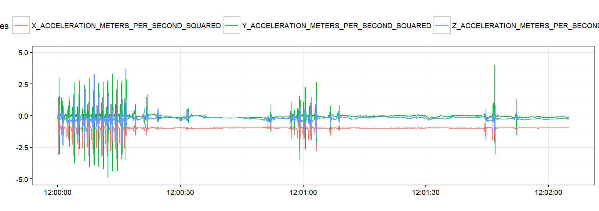
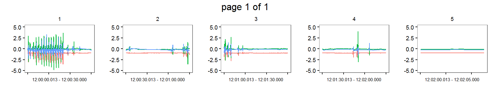
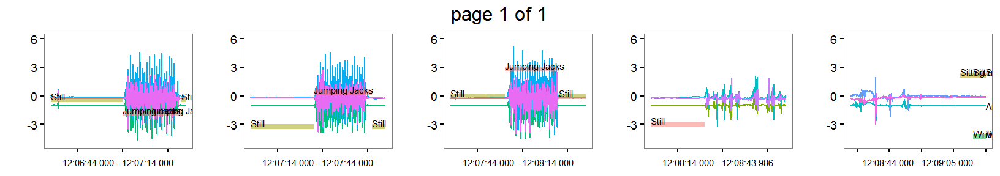
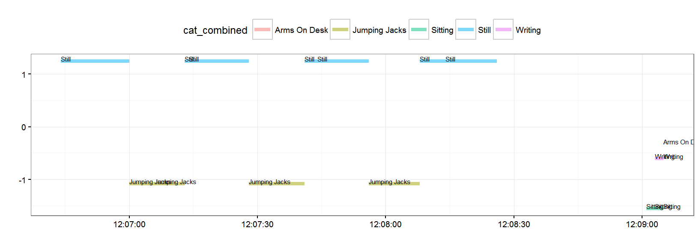
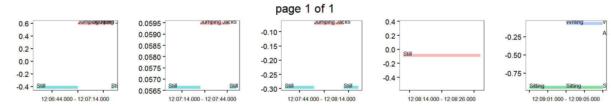

(See in R notebook)
head(sensor) HEADER_TIME_STAMP X_ACCELERATION_METERS_PER_SECOND_SQUARED
1 2016-01-15 12:00:00.013 -0.027
2 2016-01-15 12:00:00.025 0.008
3 2016-01-15 12:00:00.038 0.016
4 2016-01-15 12:00:00.049 -0.012
5 2016-01-15 12:00:00.062 -0.047
6 2016-01-15 12:00:00.075 -0.168
Y_ACCELERATION_METERS_PER_SECOND_SQUARED
1 -0.078
2 -0.148
3 -0.176
4 -0.199
5 -0.250
6 -0.379
Z_ACCELERATION_METERS_PER_SECOND_SQUARED
1 -0.238
2 -0.188
3 -0.113
4 -0.063
5 0.098
6 0.242mhealth.plot_timeseries(dfs = list(sensor[1:10000,]),
file_types = c("sensor"),
select_cols = list(c(2,3,4)))
seg_sensor = mhealth.segment(sensor, "30 sec", file_type = "sensor")
head(seg_sensor) HEADER_TIME_STAMP X_ACCELERATION_METERS_PER_SECOND_SQUARED
1 2016-01-15 12:00:00.013 -0.027
2 2016-01-15 12:00:00.025 0.008
3 2016-01-15 12:00:00.038 0.016
4 2016-01-15 12:00:00.049 -0.012
5 2016-01-15 12:00:00.062 -0.047
6 2016-01-15 12:00:00.075 -0.168
Y_ACCELERATION_METERS_PER_SECOND_SQUARED
1 -0.078
2 -0.148
3 -0.176
4 -0.199
5 -0.250
6 -0.379
Z_ACCELERATION_METERS_PER_SECOND_SQUARED SEGMENT
1 -0.238 1
2 -0.188 1
3 -0.113 1
4 -0.063 1
5 0.098 1
6 0.242 1mhealth.plot_timeseries(dfs = list(seg_sensor[1:10000,]),
file_types = c("sensor"),
select_cols = list(c(2,3,4)),
group_cols = c("SEGMENT"),
ncols = 5)
head(annotation, 10) HEADER_TIME_STAMP START_TIME STOP_TIME
1 2016-01-15 12:07:00 2016-01-15 12:06:44 2016-01-15 12:07:00
2 2016-01-15 12:07:06 2016-01-15 12:07:00 2016-01-15 12:07:06
3 2016-01-15 12:07:13 2016-01-15 12:07:06 2016-01-15 12:07:13
4 2016-01-15 12:07:28 2016-01-15 12:07:13 2016-01-15 12:07:28
5 2016-01-15 12:07:41 2016-01-15 12:07:28 2016-01-15 12:07:41
6 2016-01-15 12:07:56 2016-01-15 12:07:41 2016-01-15 12:07:56
7 2016-01-15 12:08:08 2016-01-15 12:07:56 2016-01-15 12:08:08
8 2016-01-15 12:08:26 2016-01-15 12:08:08 2016-01-15 12:08:26
9 2016-01-15 12:09:03 2016-01-15 12:09:01 2016-01-15 12:09:03
10 2016-01-15 12:09:05 2016-01-15 12:09:03 2016-01-15 12:09:05
LABEL_NAME
1 Still
2 Jumping Jacks
3 Jumping Jacks
4 Still
5 Jumping Jacks
6 Still
7 Jumping Jacks
8 Still
9 Sitting
10 SittingClip both sensor and annotation to the same time range
start_time = as.POSIXct(max(sensor[1,1], annotation[1,2]), origin = "1970-01-01", tz = lubridate::tz(sensor[1,1]))
# clip at the 10th annotation
stop_time = as.POSIXct(min(sensor[nrow(sensor),1], annotation[10,3]), origin = "1970-01-01", tz = lubridate::tz(sensor[1,1]))
sensor_clip = mhealth.clip(sensor, start_time, stop_time, "sensor")
annotation_clip = mhealth.clip(annotation, start_time, stop_time, "annotation")Segment with the same break time criteria
sensor_clip_seg = mhealth.segment(sensor_clip, breaks = "30 sec", file_type = "sensor")
annotation_clip_seg = mhealth.segment(annotation_clip, breaks = "30 sec", file_type = "annotation")Pass list to mhealth.plot_timeseries
mhealth.plot_timeseries(dfs = list(sensor_clip_seg, annotation_clip_seg),
file_types = c("sensor", "annotation"),
select_cols = list(c(2,3,4), c(4)),
group_cols = c("SEGMENT"),
ncols = 5)
mhealth.plot_timeseries(dfs = list(annotation_clip_seg),
file_types = c("annotation"),
select_cols = list(c(4)))
mhealth.plot_timeseries(dfs = list(annotation_clip_seg),
file_types = c("annotation"),
select_cols = list(c(4)),
group_cols = c("SEGMENT"),
ncols = 5)